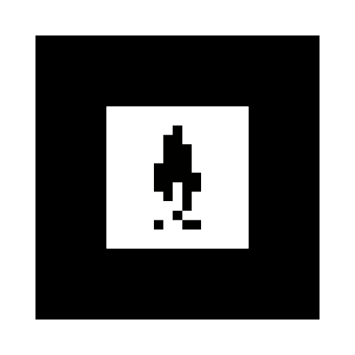

<!DOCTYPE html>
<html lang="pt-BR">
<head>
  <meta charset="utf-8">
  <meta name="viewport" content="width=device-width, initial-scale=1">
  <title>Marcador — O lampião e suas sombras — Museu AR</title>
  <link rel="stylesheet" href="css/site.css">
</head>
<body class="marcador-lampiao-page">
  <div class="marcador-lampiao-page__shell">
    <div class="marcador-lampiao-page__main">
      <div class="marcador-lampiao-page__viewer marcador-lampiao-model-shell">
        <model-viewer
          src="models/lampiao.glb"
          poster="assets/fachada-museu.png"
          alt="O lampião e suas sombras"
          camera-controls
          touch-action="pan-y"
          auto-rotate
          shadow-intensity="1"
          ar
          ar-modes="webxr scene-viewer quick-look">
        </model-viewer>
      </div>
    </div>
    <footer class="marcador-lampiao-page__footer">
      
    </footer>
  </div>
  <script type="module" src="https://ajax.googleapis.com/ajax/libs/model-viewer/3.5.0/model-viewer.min.js"></script>
</body>
</html>